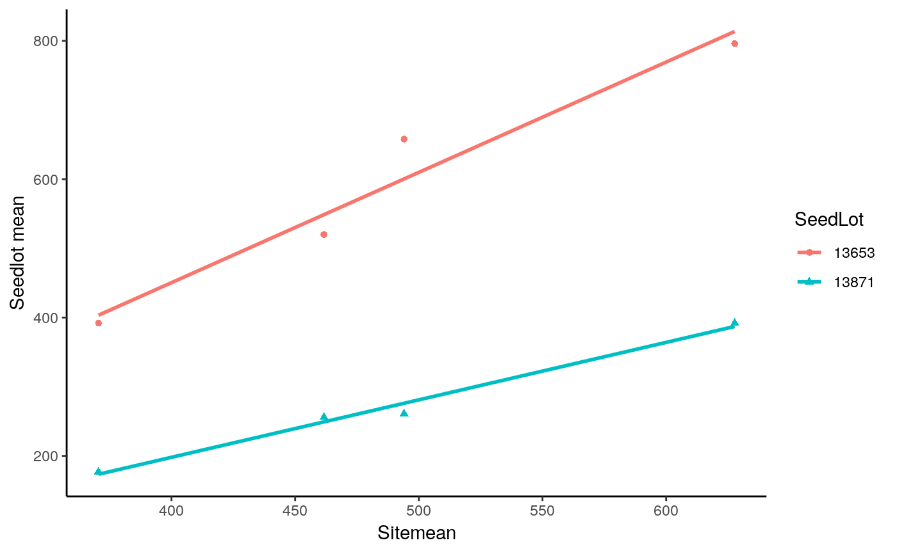
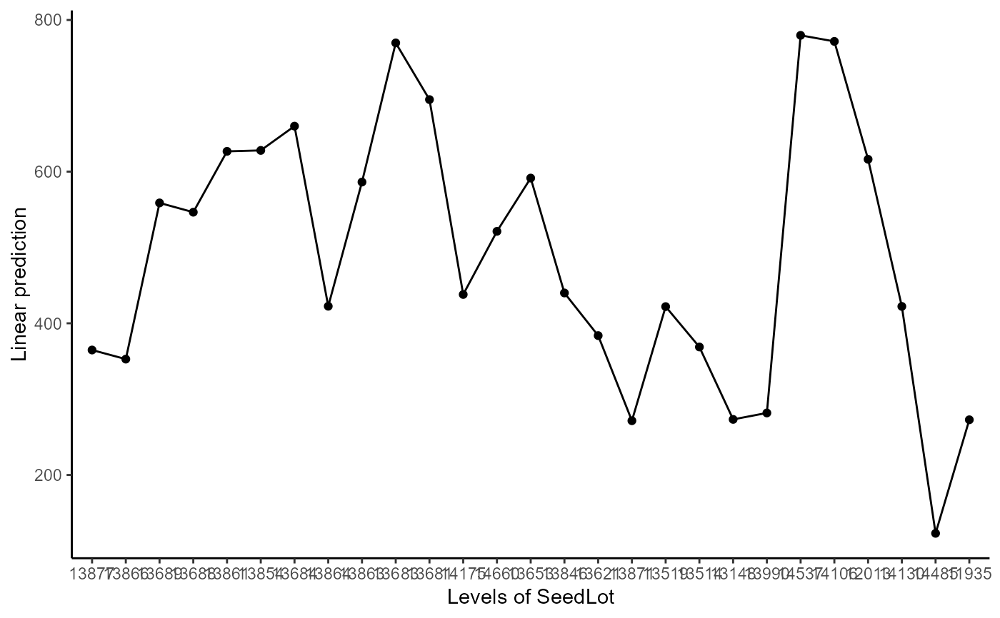
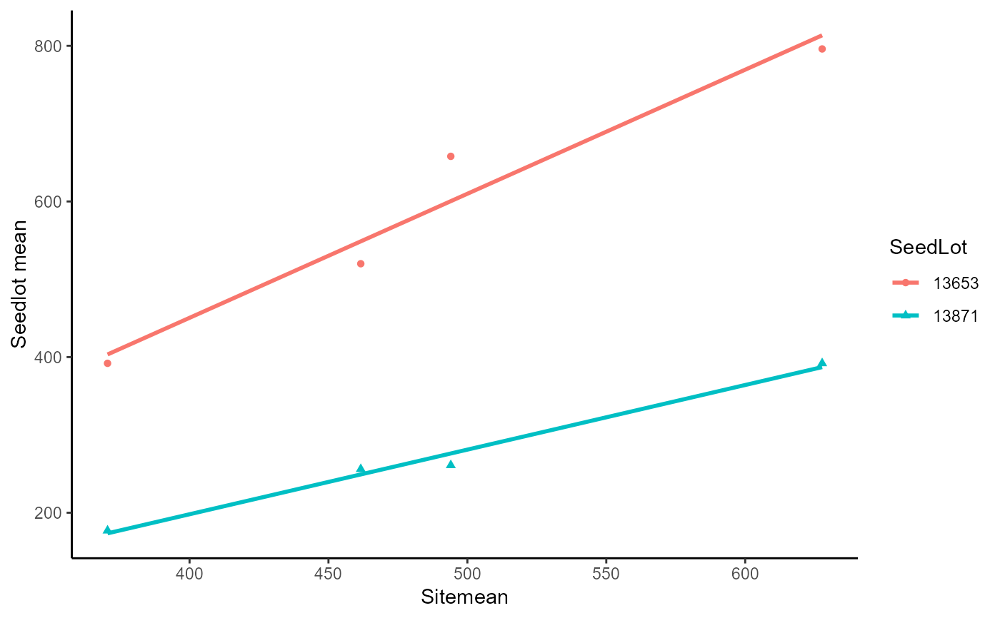
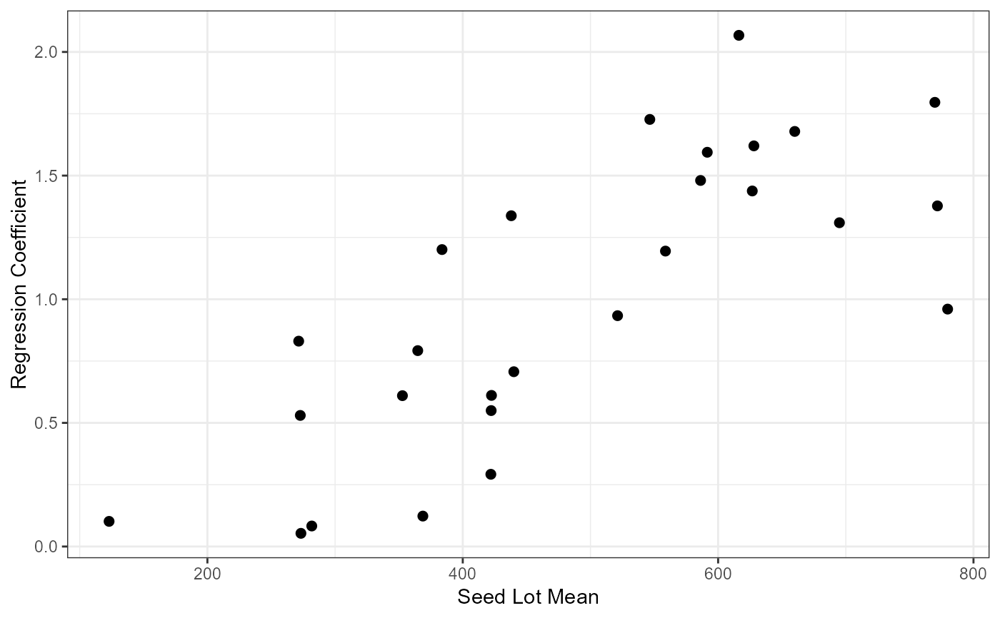

Exam5.1 presents the height of 27 seedlots from 4 sites.
Williams, E. R., Matheson, A. C. and Harwood, C. E. (2023). Experimental Design and Analysis for Tree Improvement. CSIRO Publishing (https://www.publish.csiro.au/book/3145/).
data(DataExam5.1)
library(tidyverse)
library(ggplot2)
fm5.4 <-
lm(
formula = Ht~Site*SeedLot
, data = DataExam5.1
# , subset
# , weights
# , na.action
, method = "qr"
, model = TRUE
, x = FALSE
, y = FALSE
, qr = TRUE
, singular.ok = TRUE
, contrasts = NULL
)
anova(fm5.4)
#> Warning: ANOVA F-tests on an essentially perfect fit are unreliable
#> Analysis of Variance Table
#>
#> Response: Ht
#> Df Sum Sq Mean Sq F value Pr(>F)
#> Site 3 919585 306528 NaN NaN
#> SeedLot 26 3176289 122165 NaN NaN
#> Site:SeedLot 78 707957 9076 NaN NaN
#> Residuals 0 0 NaN
library(supernova)
supernova(fm5.4)
#> Analysis of Variance Table (Type III SS)
#> Model: Ht ~ Site * SeedLot
#>
#> SS df MS F PRE p
#> ------------ --------------- | ----------- --- --------- --- ----- --
#> Model (error reduced) | 4803830.852 107 44895.615 NaN .0000 aN
#> Site | 25934.750 3 8644.917 NaN .0000 aN
#> SeedLot | 506268.296 26 19471.858 NaN .0000 aN
#> Site:SeedLot | 707956.778 78 9076.369 NaN .0000 aN
#> Error (from model) | 0.000 0 NaN
#> ------------ --------------- | ----------- --- --------- --- ----- --
#> Total (empty model) | 4803830.852 107 44895.615
library(emmeans)
emmeans(
object = fm5.4
, specs = ~ Site
, by = NULL
, fac.reduce = function(coefs) apply(coefs, 2, mean)
, contr =
, options = get_emm_option("emmeans")
, weights =
, offset =
, tran =
)
#> NOTE: Results may be misleading due to involvement in interactions
#> Warning: NaNs produced
#> Site emmean SE df lower.CL upper.CL
#> Rathaburi 462 NaN 0 NaN NaN
#> Sai Thong 628 NaN 0 NaN NaN
#> Si Sa Ket 494 NaN 0 NaN NaN
#> Sakaerat 370 NaN 0 NaN NaN
#>
#> Results are averaged over the levels of: SeedLot
#> Confidence level used: 0.95
emmip(
object = fm5.4
, formula = ~ Site
, type = c("link", "response", "predict.type")[1]
, CIs = c(TRUE, FALSE)[1]
, PIs = c(TRUE, FALSE)[2]
, style =
, engine = get_emm_option("graphics.engine")
, plotit = TRUE
, nesting.order = FALSE
) +
theme_classic()
#> NOTE: Results may be misleading due to involvement in interactions
#> Warning: NaNs produced
#> Warning: Removed 4 rows containing missing values (`geom_segment()`).

emmeans(
object = fm5.4
, specs = ~ SeedLot
, by = NULL
, fac.reduce = function(coefs) apply(coefs, 2, mean)
, contr =
, options = get_emm_option("emmeans")
, weights =
, offset =
, tran =
)
#> NOTE: Results may be misleading due to involvement in interactions
#> Warning: NaNs produced
#> SeedLot emmean SE df lower.CL upper.CL
#> 13877 365 NaN 0 NaN NaN
#> 13866 353 NaN 0 NaN NaN
#> 13689 559 NaN 0 NaN NaN
#> 13688 546 NaN 0 NaN NaN
#> 13861 627 NaN 0 NaN NaN
#> 13854 628 NaN 0 NaN NaN
#> 13684 660 NaN 0 NaN NaN
#> 13864 422 NaN 0 NaN NaN
#> 13863 586 NaN 0 NaN NaN
#> 13683 770 NaN 0 NaN NaN
#> 13681 695 NaN 0 NaN NaN
#> 14175 438 NaN 0 NaN NaN
#> 14660 521 NaN 0 NaN NaN
#> 13653 592 NaN 0 NaN NaN
#> 13846 440 NaN 0 NaN NaN
#> 13621 384 NaN 0 NaN NaN
#> 13871 272 NaN 0 NaN NaN
#> 13519 422 NaN 0 NaN NaN
#> 13514 369 NaN 0 NaN NaN
#> 13148 273 NaN 0 NaN NaN
#> 13990 282 NaN 0 NaN NaN
#> 14537 780 NaN 0 NaN NaN
#> 14106 772 NaN 0 NaN NaN
#> 12013 616 NaN 0 NaN NaN
#> 14130 422 NaN 0 NaN NaN
#> 14485 123 NaN 0 NaN NaN
#> 11935 273 NaN 0 NaN NaN
#>
#> Results are averaged over the levels of: Site
#> Confidence level used: 0.95
emmip(
object = fm5.4
, formula = ~ SeedLot
, type = c("link", "response", "predict.type")[1]
, CIs = c(TRUE, FALSE)[1]
, PIs = c(TRUE, FALSE)[2]
, style =
, engine = get_emm_option("graphics.engine")
, plotit = TRUE
, nesting.order = FALSE
) +
theme_classic()
#> NOTE: Results may be misleading due to involvement in interactions
#> Warning: NaNs produced
#> Warning: Removed 27 rows containing missing values (`geom_segment()`).

b<-anova(fm5.4)
#> Warning: ANOVA F-tests on an essentially perfect fit are unreliable
Res <- length(b[["Sum Sq"]])
df <- 208
MSS <- 1040
b[["Df"]][Res] <- df
b[["Sum Sq"]][Res] <- MSS*df
b[["Mean Sq"]][Res] <- b[["Sum Sq"]][Res]/b[["Df"]][Res]
b[["F value"]][1:Res-1] <- b[["Mean Sq"]][1:Res-1]/b[["Mean Sq"]][Res]
b[["Pr(>F)"]][Res-1] <- df(b[["F value"]][Res-1],b[["Df"]][Res-1],b[["Df"]][Res])
b
#> Analysis of Variance Table
#>
#> Response: Ht
#> Df Sum Sq Mean Sq F value Pr(>F)
#> Site 3 919585 306528 294.7389 NaN
#> SeedLot 26 3176289 122165 117.4663 NaN
#> Site:SeedLot 78 707957 9076 8.7273 < 2.2e-16 ***
#> Residuals 208 216320 1040
#> ---
#> Signif. codes: 0 '***' 0.001 '**' 0.01 '*' 0.05 '.' 0.1 ' ' 1
RegCoeff <- function(DataExam5.1)
{
fm <- lm(formula = Ht ~ SiteMean
,data = DataExam5.1)
setNames(data.frame(t(coef(fm)))
,c("intercept", "slope"))
}
X1 <- DataExam5.1%>%group_by(Site)%>%summarize(sitemean=mean(Ht))
X2 <- filter(DataExam5.1, SeedLot=="13653")
X3 <- filter(DataExam5.1, SeedLot=="13871")
dffig5.1 <-merge(rbind(X2,X3),X1)
ggplot(dffig5.1, aes(x=sitemean, y=Ht, color=SeedLot, shape=SeedLot)) +
geom_point() +
geom_smooth(method=lm, se=FALSE, fullrange=TRUE)+
theme_classic()+
labs(y="Seedlot mean",x="Sitemean")
#> `geom_smooth()` using formula = 'y ~ x'

RegCoeff <- DataExam5.1 %>%
group_by(SeedLot) %>%
do(RegCoeff(.))
SeedLot.Mean <- DataExam5.1 %>%
group_by(SeedLot) %>%
summarize(mean(Ht))
Tab5.10 <- data.frame(RegCoeff,Mean=SeedLot.Mean$'mean(Ht)')
Tab5.10
#> SeedLot intercept slope Mean
#> 1 13877 -22.21944 0.79221858 364.75
#> 2 13866 54.74004 0.61009734 352.75
#> 3 13689 -24.84275 1.19475332 558.75
#> 4 13688 -297.16176 1.72717652 546.50
#> 5 13861 -75.58482 1.43784662 626.75
#> 6 13854 -163.44117 1.62026853 628.00
#> 7 13684 -159.93672 1.67860570 660.00
#> 8 13864 123.98144 0.61113857 422.50
#> 9 13863 -136.84483 1.48034730 586.25
#> 10 13683 -107.67473 1.79629735 769.75
#> 11 13681 55.41716 1.30937837 695.00
#> 12 14175 -215.42054 1.33770745 438.00
#> 13 14660 65.25033 0.93353990 521.25
#> 14 13653 -187.27790 1.59434380 591.50
#> 15 13846 94.70064 0.70691001 440.00
#> 16 13621 -202.82372 1.20085607 383.75
#> 17 13871 -134.15971 0.83048203 271.50
#> 18 13519 279.31192 0.29211648 422.00
#> 19 13514 308.63372 0.12307233 368.75
#> 20 13148 247.19760 0.05333546 273.25
#> 21 13990 241.21346 0.08298796 281.75
#> 22 14537 310.76623 0.96012145 779.75
#> 23 14106 98.88385 1.37751724 771.75
#> 24 12013 -393.51919 2.06723798 616.25
#> 25 14130 153.70818 0.54976906 422.25
#> 26 14485 73.32322 0.10170020 123.00
#> 27 11935 13.77946 0.53017435 272.75
ggplot(Tab5.10,aes(x=Mean,y=slope))+
geom_point(size=2)+
theme_bw()+
labs(x="Seed Lot Mean",y="Regression Coefficient")
